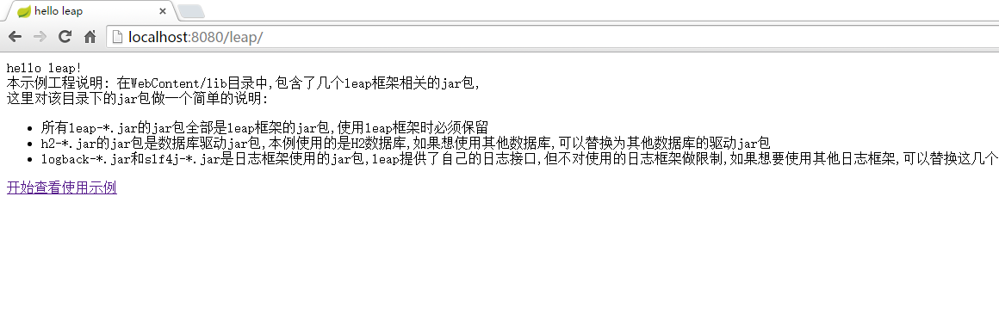

2.1 快速环境搭建
我们提供了基于eclipse的示例工程模板,请先下载示例工程.
我们提供了多种类型的示例工程,请按照自己的习惯选择下载的示例工程类型:
- 习惯使用eclipse的Dynamic web工程,请下载:leap-user-guid-web
- 习惯使用普通maven工程,请下载:leap-user-guid-maven
- 习惯使用maven jetty的工程,请下载:leap-user-guid-jetty
下载示例工程之后,将工程解压到你自己的目录,这里以Dynamic web工程为例说明,maven工程是类似的.
web工程解压之后,目录结构如下:
.setting
build
resources
src
WebContent
.classpath
.project
普通的maven工程的结构是:
src
pom.xml
将工程导入到eclipse的工作空间中并运行,可以在终端看到如下日志:
METHO PATH ACTION VIEW
----- ----------------- -------------------------------- ------------------------------
* /user/delete_user action:UserController.deleteUser
GET /user/create_user action:UserController.createUser htpl:/user/create_user
POST /user/create_user action:UserController.createUser htpl:/user/create_user
GET /user/edit_user action:UserController.editUser htpl:/user/edit_user
POST /user/edit_user action:UserController.editUser htpl:/user/edit_user
* /user/index action:UserController.index htpl:/user/index
* /index action:HomeController.index htpl:/index
* /user action:UserController.index htpl:/user/index
* / action:HomeController.index htpl:/index
这个日志就是本示例工程的路由表,是leap框架特有的提供方便调试的功能,当然也可以作为应用启动完成的标识.
此时访问http://localhost:8080/leap可以看到如下页面:

说明本示例工程环境已经搭建完成,此时可以点击开始查看使用示例查看示例工程内置的一个简单的用户增删改查的功能,下一节将对这个示例工程进行详细说明.